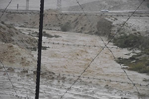

Recommended Reading
The Sustainability Lab Notes
As you may have noticed, The Lab's website has gone through an incredible metamorphosis, thanks to the efforts of our Lab staff and our designers, Ashley Quinn and Andy Gillette of We Less Than Three.
Written by Arielle Angel on July 14, 2014
Updates from the Field: Wadi Attir
Late last year, the Negev got a record amount of rain. Over three days in December, 160 mm of rain, nearly 80% of the yearly average, was recorded in the area of the project site.
Written by Arielle Angel on July 14, 2014
Updates from the Field: Global Sustainability Fellows
This blog post was written by Assistant GSF Faculty Ana Laura Dengo, who recently visited the site of the GSF Program Fieldwork with Faculty member BK Singh and Assistant Faculty Jholenny Cordoba Chaves.
Written by Ana Laura Dengo on February 18, 2014